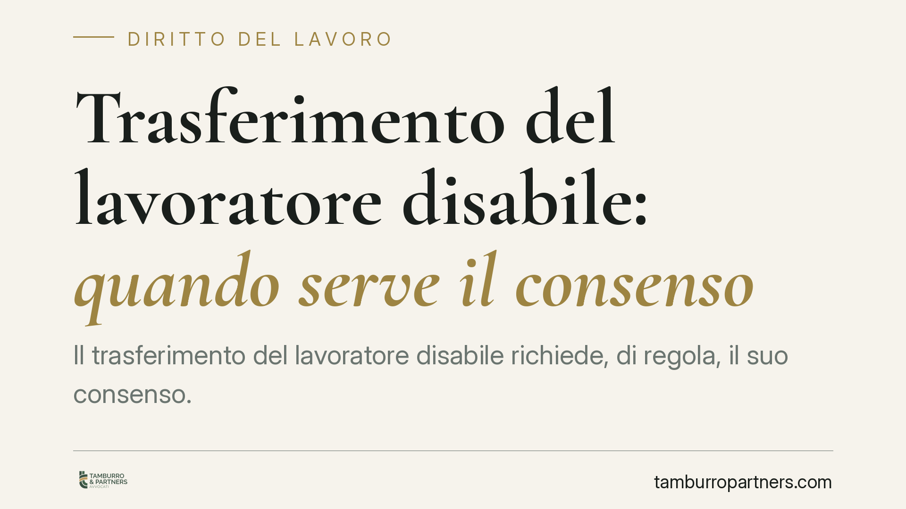

Trasferimento del lavoratore disabile: quando serve il consenso
Il trasferimento del lavoratore disabile richiede, di regola, il suo consenso. Lo prevede la Legge 104/1992, ma la protezione non è assoluta: la Cassazione ha chiarito che casi di grave incompatibilità ambientale possono giustificare lo spostamento anche senza accordo. Capire dove passa il confine è decisivo per lavoratori e datori.

Il fatto e perché conta
La domanda ricorre spesso nei rapporti di lavoro: un dipendente titolare delle tutele previste per la disabilità può essere trasferito in altra sede contro la propria volontà? La risposta non è netta. La legge riconosce una protezione forte, ma la giurisprudenza ne ha delineato i limiti, individuando situazioni in cui la tutela cede di fronte a esigenze organizzative concrete e documentate.
La questione tocca due interessi contrapposti: il diritto del lavoratore disabile a mantenere continuità assistenziale e di cura, e il potere del datore di lavoro di organizzare l'attività d'impresa.
Inquadramento normativo
Il riferimento è l'articolo 33, comma 6, della Legge 104/1992. La norma stabilisce che il lavoratore con handicap in situazione di gravità (accertata ai sensi dell'art. 3, comma 3, della stessa legge) ha diritto a scegliere, ove possibile, la sede di lavoro più vicina al proprio domicilio e non può essere trasferito senza il suo consenso.
Si tratta di una tutela pensata per garantire la continuità dei percorsi terapeutici e riabilitativi, oltre che il legame con il contesto di riferimento. La protezione, però, non è illimitata. Due passaggi normativi la circoscrivono: il diritto alla sede opera «ove possibile» e la garanzia contro il trasferimento presuppone che sussista la situazione di gravità tutelata.
Su questo quadro è intervenuta la Corte di Cassazione, che ha riconosciuto la legittimità del trasferimento non consensuale in presenza di una cosiddetta incompatibilità ambientale: una situazione di conflitto grave e oggettivo nell'ambiente di lavoro, tale da rendere impossibile la prosecuzione del rapporto nella sede originaria. In questi casi lo spostamento non è espressione di un potere organizzativo ordinario, ma risponde a un'esigenza di tutela dell'organizzazione e, talvolta, dello stesso lavoratore.
Implicazioni pratiche
Per il lavoratore disabile questo significa che la tutela dell'art. 33 non equivale a un'immunità assoluta dal trasferimento. Il datore che intenda superarla deve però dimostrare l'esistenza di ragioni gravi e verificabili, non generiche esigenze produttive.
Per il datore di lavoro la conseguenza è speculare: il trasferimento del dipendente protetto va motivato in modo puntuale. L'incompatibilità ambientale non può essere affermata in astratto, ma richiede la prova di conflitti effettivi, del loro carattere serio e dell'impossibilità di soluzioni alternative meno gravose (ad esempio, la ricollocazione della controparte del conflitto).
È importante ricordare che l'onere della prova grava sul datore. In sede di contenzioso, un trasferimento non adeguatamente giustificato rischia di essere dichiarato illegittimo, con conseguente diritto del lavoratore al rientro nella sede originaria e all'eventuale risarcimento.
Un ulteriore profilo riguarda l'accertamento della gravità: la tutela contro il trasferimento presuppone il riconoscimento dell'handicap grave. Situazioni diverse, come quelle del lavoratore che assiste un familiare disabile (cosiddetto caregiver), seguono regole in parte differenti e vanno valutate caso per caso.
Cosa fare in concreto
- Verifica la tua posizione: accerta se sei titolare della tutela per handicap grave (art. 3, comma 3, L. 104/1992) o di altra fattispecie, perché il livello di protezione cambia.
- Chiedi la motivazione scritta: se ricevi un provvedimento di trasferimento, pretendi l'indicazione delle ragioni specifiche che lo giustificano.
- Documenta il contesto: conserva comunicazioni, prova delle esigenze di cura e ogni elemento utile a valutare la legittimità dello spostamento.
- Valuta i tempi di reazione: l'impugnazione del trasferimento è soggetta a termini; consigliamo di rivolgersi tempestivamente a un professionista prima di trasferirsi o rifiutare la nuova sede.
- Datori di lavoro: prima di disporre il trasferimento di un dipendente protetto, costruite un fascicolo istruttorio che documenti l'incompatibilità ambientale e l'assenza di alternative praticabili.
La linea di confine tra tutela e legittima esigenza organizzativa è sottile e dipende dai fatti concreti. Ogni situazione va esaminata alla luce delle circostanze specifiche del rapporto di lavoro.
Disclaimer
Contributo informativo a cura di Tamburro & Partners - Avv. Giuseppe Tamburro. Non costituisce parere legale.
Ogni storia di lavoro ha i suoi tempi.
Se gestisci HR e vuoi un confronto su contenzioso, ispezioni o licenziamenti, scrivi allo studio. Ti rispondiamo entro un giorno lavorativo.